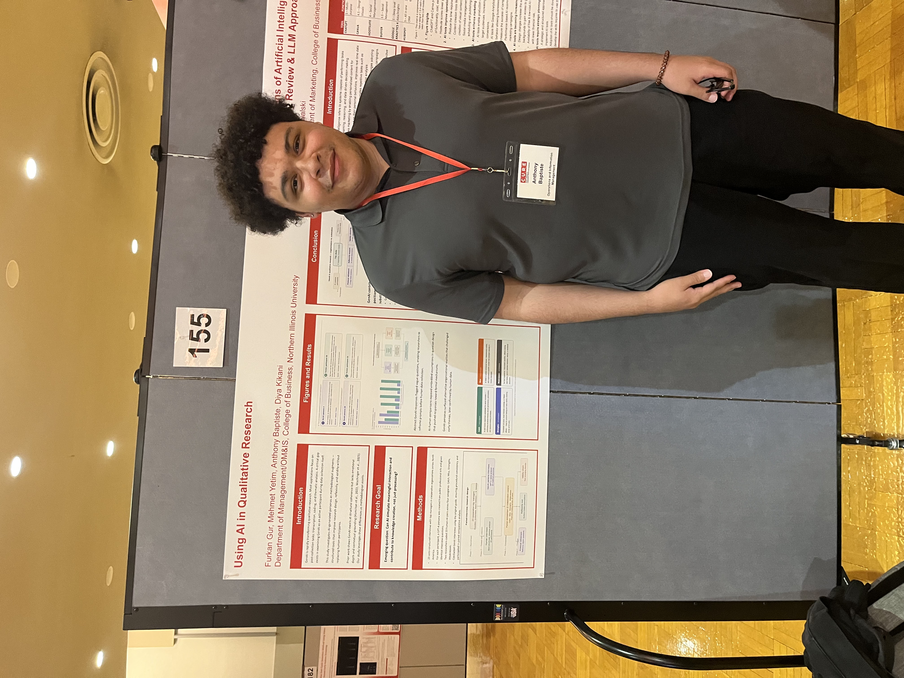

AI Research
Applied AI research that can become real workflow tools.
My research explores how AI-generated personas and LLM-based interview simulations can strengthen interview-based qualitative research. For clients, this translates into a practical capability: designing AI-assisted workflows that support researchers, analysts, and operators without replacing human judgment.
CURE Presentation

Research Paper
This work examines how matched AI and human interviews can be compared to understand where LLMs are helpful, where they fall short, and how they can be used responsibly in qualitative research workflows. The consulting lesson is simple: AI is most useful when it is designed around a real workflow, clear evaluation, and human interpretation.
Qualitative AI Studio
This separate research tool extends the project into a more interactive workflow, showing how AI can support persona-based interview simulation, transcript comparison, and qualitative interpretation in a more guided environment. It is also proof that I can move from research idea to working prototype.